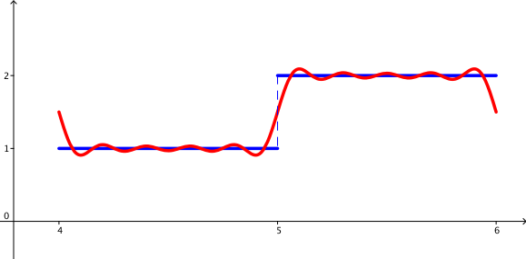
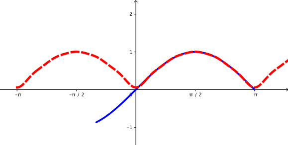

2.5. Herhangi Bir Aralıkta Fourier Serileri
Kayıt Tarihi:
Son Güncelleme:
Bu bölümde şu ana kadar standart olarak ele aldığımız aralığın dışında keyfi aralıklarda Fourier serilerini ele alacağız. Ayrıca özel Fourier serileri olan Fourier-sinüs ve Fourier-kosinüs serileri de tanıtılacaktır.
Anahtar Kelimeler: Fourier-cosinüs serisi · Fourier-sinüs serisi · periyodik fonksiyonBu ana kadar sadece $(-\pi,\pi)$ aralığında tanımlı olan $2\pi-$periyotlu fonksiyonların ve bunların periyodik genişlemelerinin Fourier serilerini inceledik. Aslında genel durumda $a>0$ olmak üzere $f:(\alpha-a,\alpha+a)\rightarrow\mathbb{R}$ biçiminde tanımlanmış $2a-$periyodik fonksiyonlar için de elde ettiğimz sonuçlar geçerlidir. Bunu görmek için yeni bir $$y:=\frac{\pi}{a}(x-\alpha)$$ değişkenini ve yeni bir $$h(y):=f(x)$$ fonksiyonunu tanımlayalım. Bu durumda eğer $f$ fonksiyonu $2a-$periyodik ise $h$ fonksiyonu $2\pi-$ periyodik olacaktır, ayrıca $f$'nin $x$ noktasında sağ ve sol türevleri var ise $h$'ın da $y$ noktasında sağ ve sol türevleri mevcut olacaktır. $f$ fonksiyonu $x$ noktasını içeren bir aralıkta parçalı sürekli ise $h$'ın da $y$'yi içeren bir aralıkta parçalı sürekli olacağı da açıktır. Bu durumda Teorem 2.4.1 gereği $$a_n:=\frac{1}{\pi}\int_{-\pi}^{\pi}h(y)\cos ny\,dy,\qquad n=0,1,2,\ldots$$ ve $$b_n:=\frac{1}{\pi}\int_{-\pi}^{\pi}h(y)\sin ny\,dy,\qquad n=1,2,3,\ldots$$ olmak üzere $$\frac{1}{2}\left[h(y+)+h(y-)\right]=\frac{1}{2}a_0+\sum\limits_{n=1}^{\infty}\left(a_n\cos ny+b_n\sin ny\right)$$ eşitliği geçerli olur. Bunlarda değişken değişiminin tersini uygularsak \begin{equation} \tag{2.5.1} \label{eq:fs-3} \frac{1}{2}\left[f(x+)+f(x-)\right]=\frac{1}{2}a_0+\sum\limits_{n=1}^{\infty}\left[a_n\cos \frac{n\pi}{a}(x-\alpha)+b_n\sin \frac{n\pi}{a}(x-\alpha)\right], \end{equation} \begin{equation} \label{eq:fs-4} \tag{2.5.2} a_n:=\frac{1}{a}\int_{\alpha-a}^{\alpha+a}f(x)\cos \frac{n\pi}{a}(x-\alpha)\,dx,\qquad n=0,1,2,\ldots \end{equation} ve \begin{equation} \label{eq:fs-5} \tag{2.5.3} b_n:=\frac{1}{a}\int_{\alpha-a}^{\alpha+a}f(x)\sin \frac{n\pi}{a}(x-\alpha)\,dx,\qquad n=1,2,3,\ldots \end{equation} eşitlikleri elde edilir. Bu eşitliklerle tanımlı seriye $f$ fonksiyonunun $(\alpha-a,\alpha+a)$ aralığındaki Fourier serisi denir.
Örnek 2.5.1
$$ f(x):=\left\{\begin{array}{ll} 1,\quad & 4\lt x\leq5\text{ ise}\\ 2,\quad & 5\lt x\lt 6\text{ ise} \end{array} \right. $$ olarak tanımlanan fonksiyonun $(4,6)$ aralığında Fourier serisini bulalım. Burada $\alpha=5$ ve $a=1$ olup Fourier katsayıları $$a_0=\int_{4}^{6}f(x)\,dx=\int_{4}^{5}dx+\int_{5}^{6}2\,dx=3,$$ $$a_n=\int_{4}^{5}\cos n\pi(x-5)\,dx+\int_{5}^{6}2\cos n\pi(x-5)\,dx=0,\quad n>0$$ ve \begin{eqnarray*} b_n &=& \int_{4}^{5}\sin n\pi(x-5)\,dx+\int_{5}^{5}2\sin n\pi(x-5)\,dx\\ &=& -\frac{\cos n\pi(x-5)}{n\pi}\bigg|_4^5-\frac{2\cos n\pi(x-5)}{n\pi}\bigg|_5^6\\ &=& \left\{\begin{array}{ll} 0,\quad & n\text{ çift ise}\\ \frac{2}{n\pi}, \quad & n\text{ tek ise} \end{array} \right. \end{eqnarray*} olarak bulunur. Böylece $x\in(4,6)\backslash\{5\}$ için $$f(x)=\frac{3}{2}+\frac{2}{\pi}\sum\limits_{n=1}^{\infty}\frac{1}{2n-1}\sin (2n-1)\pi(x-5)$$ olarak bulunur, $x=5$ için serinin toplamı $1.5$ olur.  Şekil 2.4: Yukarıdaki örnekte bahsedilen fonksiyon ve onun Fourier serisi$(-a,0)$ aralığında tanımlı bir fonksiyonun $ (-a,a) $ aralığında Fourier serisini bulmak için önce fonksiyonu bu aralığa genişletmemiz gerekir. Bu genişletme farklı şekillerde yapılabilir, örneğin $f$ fonksiyonu $(-a,a)$ aralığında çift (veya tek) bir fonksiyon olacak şekilde genişletilebilir. Bunlardan hiç biri sağlanmayacak şekilde de genişletme yapılabilir fakat eğer bu şekilde genişletme yapılırsa buna ayrı bir isim veririz.
Tanım 2.5.1
$a>0$ olmak üzere $f:(0,a)\rightarrow\mathbb{R}$ integrallenebilir bir fonksiyon olsun.- $f$ fonksiyonunun $(-a,a)$ aralığında tek genişletmesinin Fourier serisine $f$ fonksiyonunun $(0,a)$ aralığında Fourier sinüs serisi denir, bu seri $$b_n:=\frac{2}{a}\int_{0}^{a}f(x)\sin \frac{n\pi}{a}x\,dx$$ olmak üzere $$\sum\limits_{n=1}^{\infty}b_n\sin\frac{n\pi}{a}x$$ şeklindedir.
- $f$ fonksiyonunun $(-a,a)$ aralığında çift genişletmesinin Fourier serisine $f$ fonksiyonunun $(0,a)$ aralığında Fourier kosinüs serisi denir, bu seri $$a_n:=\frac{2}{a}\int_{0}^{a}f(x)\cos \frac{n\pi}{a}x\,dx$$ olmak üzere $$\sum\limits_{n=1}^{\infty}a_n\cos\frac{n\pi}{a}x$$ şeklindedir.
Örnek 2.5.2
$f(x):=\sin x$ fonksiyonunun $(0,\pi)$ aralığında Fourier kosinüs serisini hesaplayalım. Öncelikle $$a_0=\frac{2}{\pi}\int_{0}^{\pi}\sin x\,dx=\frac{4}{\pi}\quad\text{ve}\quad a_1=\frac{2}{\pi}\int_{0}^{\pi}\sin x\cos x\,dx=0$$ olur (neden $a_1$'i ayrıca hesapladığımızı aşağıda göreceğiz). $n>1$ için de \begin{eqnarray*} a_n &=& \frac{2}{\pi}\int_{0}^{\pi}\sin x\cos nx\,dx\\ &=& \frac{1}{\pi}\int_{0}^{\pi}\left[\sin (1+n)x+\sin(1-n)x\right]\,dx\\ &=& -\frac{1}{\pi}\left[\frac{\cos(1+n)x}{1+n}+\frac{\cos(1-n)x}{1-n}\right]\bigg|_0^\pi\\ &=& \left\{\begin{array}{ll} \frac{4}{\pi(1-n^2)},\quad & n\text{ çift ise}\\ 0,\quad & n\text{ tek ise} \end{array}\right. \end{eqnarray*} olarak bulunur. Böylece $(0,\pi)$ aralığında $$\sin(x)=\frac{2}{\pi}+\frac{4}{\pi}\sum\limits_{n=1}^{\infty}\frac{1}{1-4n^2}\cos2nx$$ elde edilmiş olur. Aslında bu seri tüm reel eksende $|sin x|$ fonksiyonuna yakınsar. Şekil 2.5: Yukarıdaki örnekte bahsedilen fonksiyon ve onun Fourier serisi
2.4. Fourier Serilerinin Yakınsaklığı
Fourier Analizi
2.6. Gibbs Olgusu